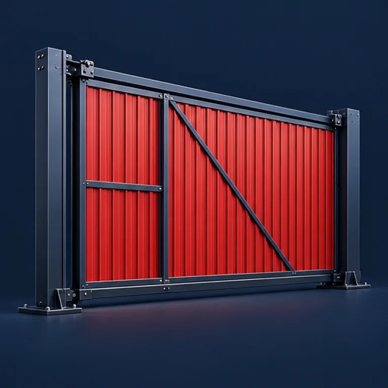
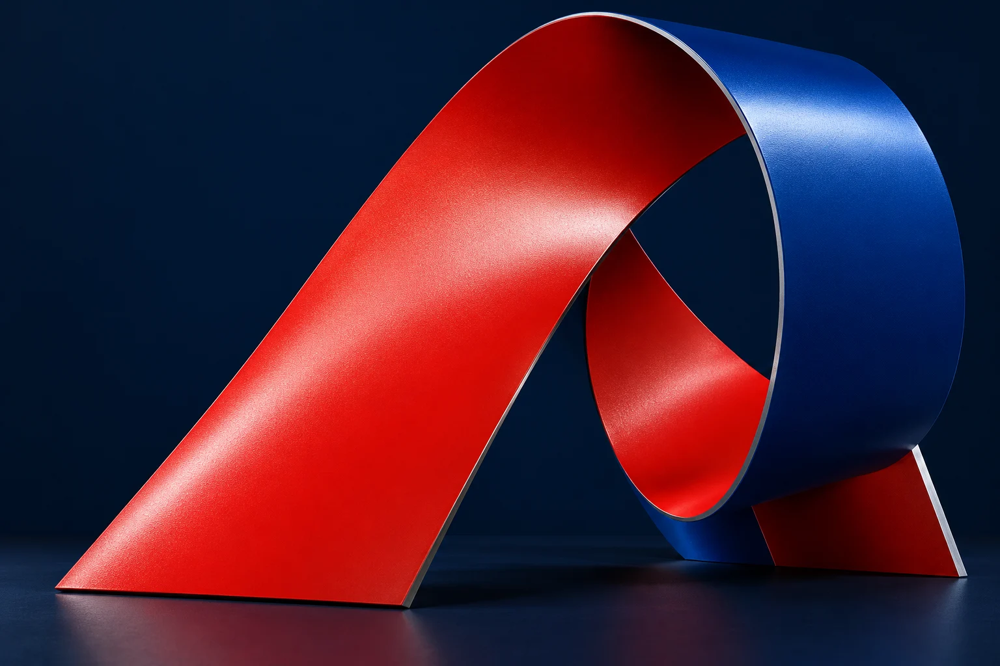
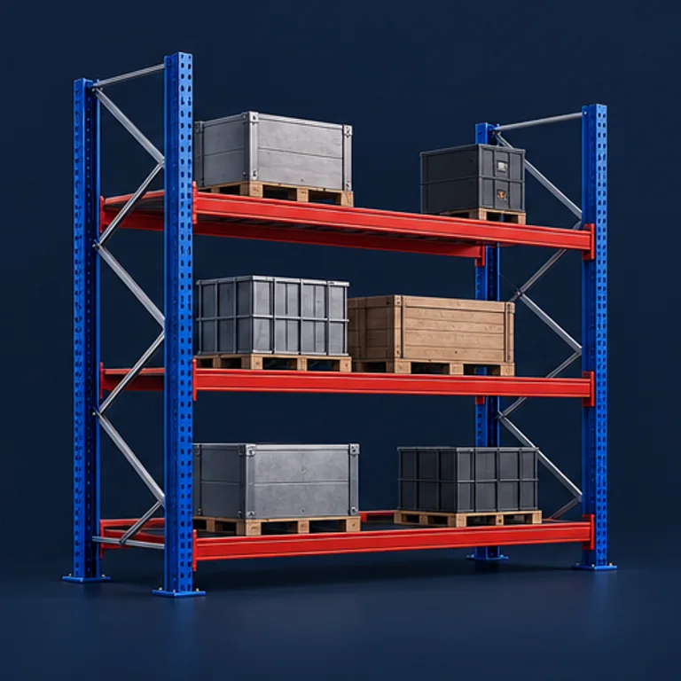
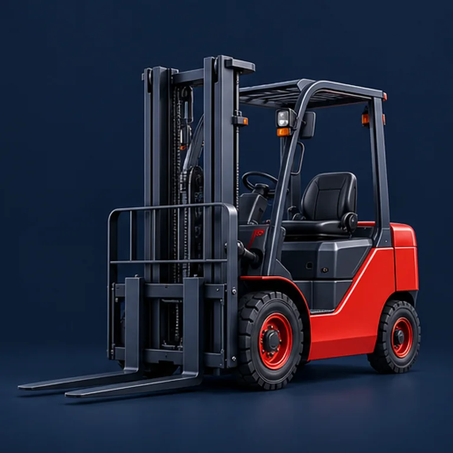
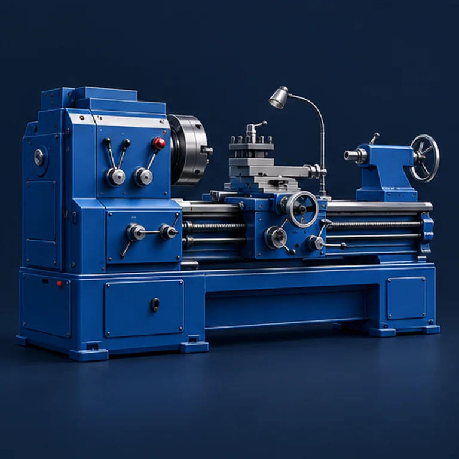
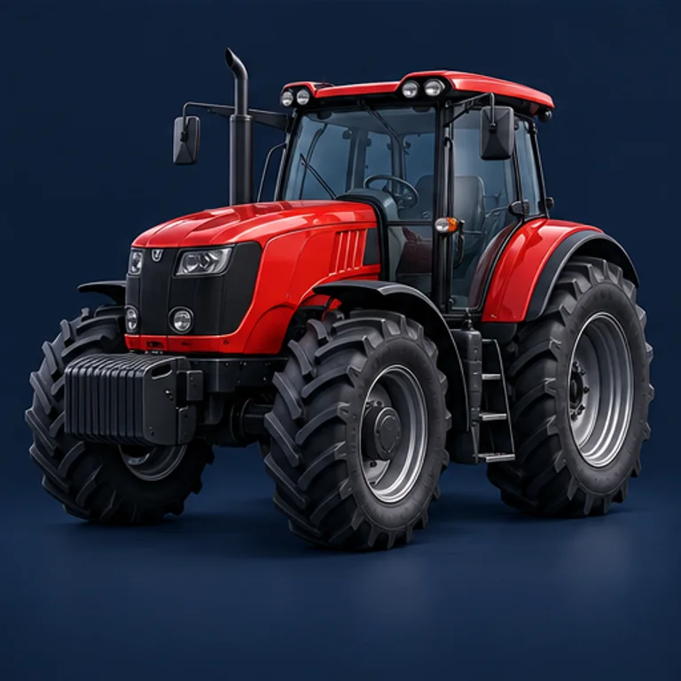
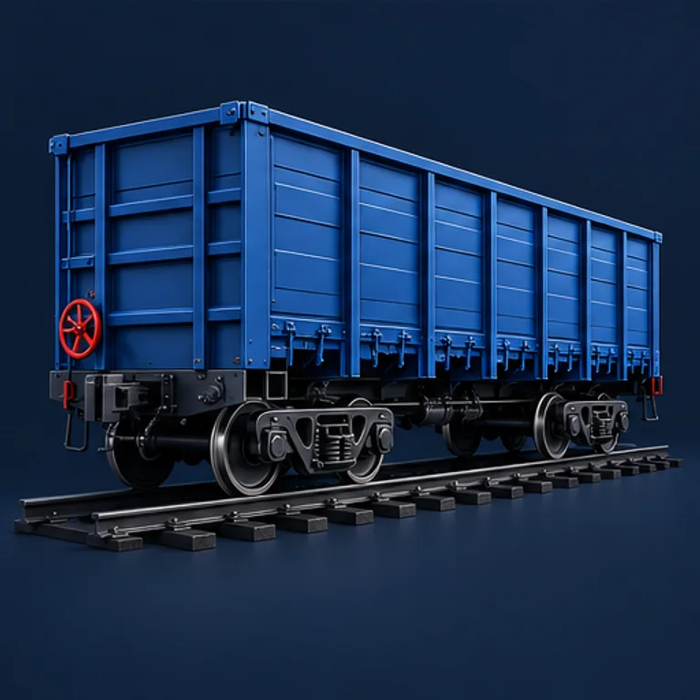

Ворота и металлоконструкции
Для серийных изделий и конструкций. Согласуем требования к покрытию и цвет.
Подобрать покрытиеАкриловые и алкидные материалы. Цвет по вашему эталону, партия от 120 кг.
Работаем с предприятиями
Есть готовое ТЗ? Прикрепить ТЗ

Партия в цвет по вашему эталону
Для освоенных материалов
Производство в Ярославле
Срок зависит от состава, цвета и объёма. Разработку и доработку согласуем отдельно. Возможность изготовления цвета оцениваем по вашей задаче.
От ворот до ремонта техники. Выберите изделие — передадим его в запрос на подбор покрытия.

Для серийных изделий и конструкций. Согласуем требования к покрытию и цвет.
Подобрать покрытие
Цвет по образцу, материал под ваш процесс окраски.
Подобрать покрытие
Учитываем поверхность, нанесение и эксплуатацию техники.
Подобрать покрытие

В том числе ремонт сельхозтехники. Материал под согласованные условия.
Подобрать покрытие
Для ремонтных задач. Требования уточняем до согласования заказа.
Подобрать покрытиеИллюстрации применений. Покрытие подбираем под изделие, способ нанесения и условия эксплуатации.
Укажите основу в ТЗ или назовите текущую краску. Сопоставим материал с поверхностью, нанесением и условиями эксплуатации.
Если в вашей технологии используется акриловая основа — начнём с требований к изделию и нанесению.
Если работаете с алкидной основой — назовите текущий материал и результат, который хотите получить.
Сопоставим поверхность, нанесение и результат. Свойства, комплектацию и совместимость согласуем для конкретного материала.
Не уверены в выборе основы? Начните с описания задачи.
Помочь с выборомДеталь, выкрас или жидкий образец. Подбираем цвет, согласуем результат и сравниваем следующие партии с тем же эталоном.
Выберите цвет панели. Форма, свет и объём остаются прежними — меняется только окрашенная поверхность.
Демонстрационный оттенок: синий
Обсудить цвет по вашему образцуСопоставляем каждую партию с согласованным эталоном.
Отдельно контролируем качественные показатели материала.
Определяем эталон и условия сравнения.
Готовим выкрас и согласуем образец для вашей задачи.
Визуальный и приборный контроль в собственной исследовательской лаборатории.
Передайте полный цикл или отдельную операцию. Состав работ, технологию и порядок этапов согласуем под вашу задачу.
Обсудить сотрудничествоИзготовление компонентов на производственном оборудовании.
Работа с материалом по согласованной технологии.
Отдельная операция или завершение производственного цикла.
Операции объединяются в согласованный цикл или выполняются отдельно
Доступность каждого этапа, объём и сроки подтверждаем после оценки задачи.
Собственное производство и исследовательская лаборатория в Ярославле. Работаем с лакокрасочными материалами с 2007 года.
Сопоставляем требования и технологию нанесения.
Подбираем цвет по эталону и согласуем выкрас.
Проверяем качество материала и соответствие цвету.
От требований к согласованной партии
Условия, подбор цвета и начало сотрудничества
От 120 кг в цвет по эталону заказчика. Возможность изготовления конкретного цвета рассматриваем вместе с задачей.
Это срок для освоенных материалов. Он зависит от состава, цвета и объёма. Разработка и доработка требуют отдельного согласования.
Да, эталоном может быть деталь, выкрас или жидкий образец. Согласуем образец и условия сравнения цвета.
Опишите, что окрашиваете, как наносите материал и какой результат нужен. Неизвестные технические параметры уточним в ходе обсуждения.
Укажите материал и запросите техническое описание. Доступность документа уточним для выбранного состава. Если материал ещё не выбран, начнём с задачи.
Запросить TDSРассматриваем давальческую переработку сырья заказчика: полный цикл или отдельные операции. Технологию и доступные этапы согласуем после оценки.
Что вы окрашиваете, как наносите материал и какой цвет нужен? Опишите задачу или приложите готовое ТЗ.
Неизвестные параметры уточним.
Материал, цвет, объём и сроки согласуем по запросу.
Ярославль.
Производство с 2007 года.
+7 (4852) 58-76-54
sales@volgakraski.ru
Актуальные контакты — на официальном сайте завода.
Контакты на сайте завода